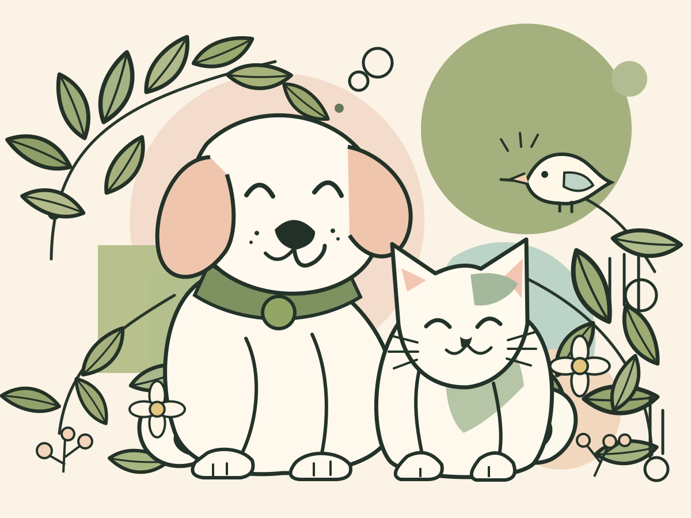
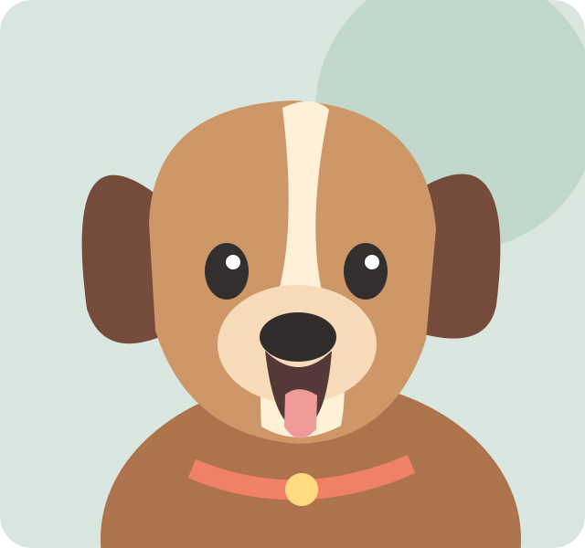

SERVICE / 01
Websites with purpose
Welcoming, clear, mobile-friendly websites that tell a shelter's story, showcase animals, and make it easier for people to take action.
I help animal shelters and rescue groups get noticed with thoughtful websites, adoption campaigns, and creative storytelling. Because every animal deserves the chance to be seen, loved, and welcomed home.

More than a websiteA voice for every rescue
Good stories change lives.Let's help people find them.
Behind every rescue is a story worth sharing—and a team working hard to make a difference.
Animal shelters do incredible work. But many have limited time, budgets, and resources to reach the people who could adopt, foster, volunteer, or help.
Through website design, adoption campaigns, promotional materials, and AI-assisted tools, I help make their work easier to discover and their animals' stories harder to overlook.
Practical, purpose-driven creative help so rescue teams can focus on what they do best: caring for animals.
Welcoming, clear, mobile-friendly websites that tell a shelter's story, showcase animals, and make it easier for people to take action.
Memorable adoption messages, social content, and digital campaigns that help the right people connect with animals in need of homes.
Posters, graphics, simple brand systems, and thoughtful use of creative tools and AI—always guided by real people and real stories.
A glimpse of the websites, campaigns, and content we could create together.
Every pet has a story. Let's help you find the one that changes yours.
Meet the pets ↗
Web design · Clear stories · Easy next steps

Adoption campaign · Posters · Graphics
Social media · Content design · Awareness
These are sample visuals demonstrating creative possibilities, not real shelter partnerships or live adoption listings.
No complicated process. Just a shared goal to help more rescue stories reach the people who need to see them.
We talk about your shelter, your goals, the animals you care for, and what support would make the biggest difference.
I turn your needs into a simple creative direction, whether that's a website, a set of social posts, or an adoption campaign.
I design, write, and refine the materials, using modern tools and AI where helpful while keeping the stories accurate and human.
We get the work ready to share so more people can discover the shelter, connect, and take the next step.
Good design won't replace the work of rescuers. It can help their work reach further.
If you're part of a shelter, rescue team, or a project that helps animals, I'd love to hear what you're working on. Let's explore what we can create together.
Start with a few details and I'll help you take the conversation forward.